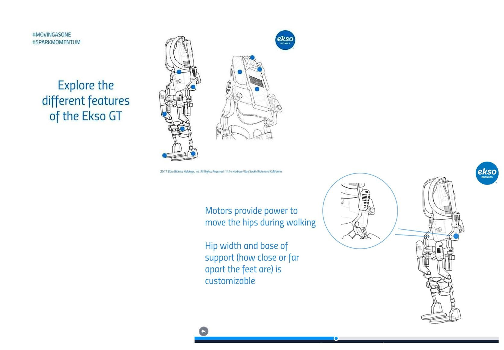

Engineering / Design Intern | Ekso Bionics
Ekso is a pioneer of wearable exoskeletons, applying the technology to gait rehabilitation to support and empower survivors through their rehab processes and enahnce experiences for physical therapists across the world. I had the incredible opportunity to work with their product and engineering teams for the summer, focusing on their flagship medical robot; the Ekso GT.
- My Role
- Mechanical Design, User Research, Prototyping,
Product Marketing, Data Analysis
- How Long
- June 2017 - Aug 2017
- Where
- San Francisco Bay Area | Richmond, CA
00 | Intro
I created conceptual designs, CAD models and functional prototypes for mechanical exoskeleton improvements, and worked alongside the VPs of Product and Marketing to align clinical and customer experience with the capabilities of Ekso's devices.
01 | Bracing Interfaces
The Ekso GT has key bracing interfaces to provide stability and control to the patient. One of my main projects was a high-level redesign of the leg braces, with the goal of making the device more inclusive and comfortable for a wider size range of patients.
To understand user needs I did ethnographic research on patient experiences, interviews with physical therapists, and storyboarding exercises. I collaborated with the clinical team to identify pain points with existing designs and to source feedback throughout my iterative prototyping.
My designs inspired final forms which were put into production and brought to marker shortly after my internship! Unfortunately, I cannot share my designs or research documents, but please reach out if you have questions!
Deliverables
Storyboards, Solidworks Models, 3D Prints, Findings Report
02 | Clinical UX
When using the Ekso GT, the physical therapist controls and manages the patient and their settings using a remote on the back of the device. To continue easing the rehab process for physical therapists, I worked on a UX study for the remote to inform more effective future designs.
To understand the experience of using the remote, I did deep dives into the product flow and walked through the set up and removal process first hand. I conducted user interviews to gain insight into the various venues which the remote would function in, from training enviornments to live therapy. In addition to qualitative research, I analyzed usage data to investigate the frequency that certain features were being used and potential correlations between them.
Deliverables
User Flows, UI & UX Recomendations, Python Code, Summative Report
02 | Interactive Web Content
Because medical exoskeletons are extremely new in the field, they can be difficult to understand, and even frightening to use for the first time. During my internship, the VP of Marketing challenged me to tackle this issue by creating a showcase of the form and functions of their flagship robot to serve as an introduction for new users.
After collaborating with both the engineering and marketing teams, my concept was a hierarchical view of the device from front and back, with the ability to interactively zoom in on key points. To maintain the integrity of the design while presenting a less technical view of the robot, I used line art generated from CAD models. The content was powered by Prezi.
Deliverables
Interaction Walkthrough, Final Prezi

05 | Conclusion and Reflection
It was amazing to see how quickly we went from basic user research to low fidelity sketches to functioning products. Working across both software and hardware design exposed us to a vast array of new challenges and problems unique to the intersection of the disciplines.
Diversity Fuels Innovation
In choosing such a multi-faceted soltuion, we relied heavily on our team's diversity of academic expertise and life experiences. Everyone at one point or another toggled between leader, mentor, and maker roles to keep the ship running.
Know Your Users
Moreso than ever, well-founded user research was key to our success. By immersing ourselves in the hockey culture, we made key discoveries about what players would and would not tolerate changes to on the physical ice rink.